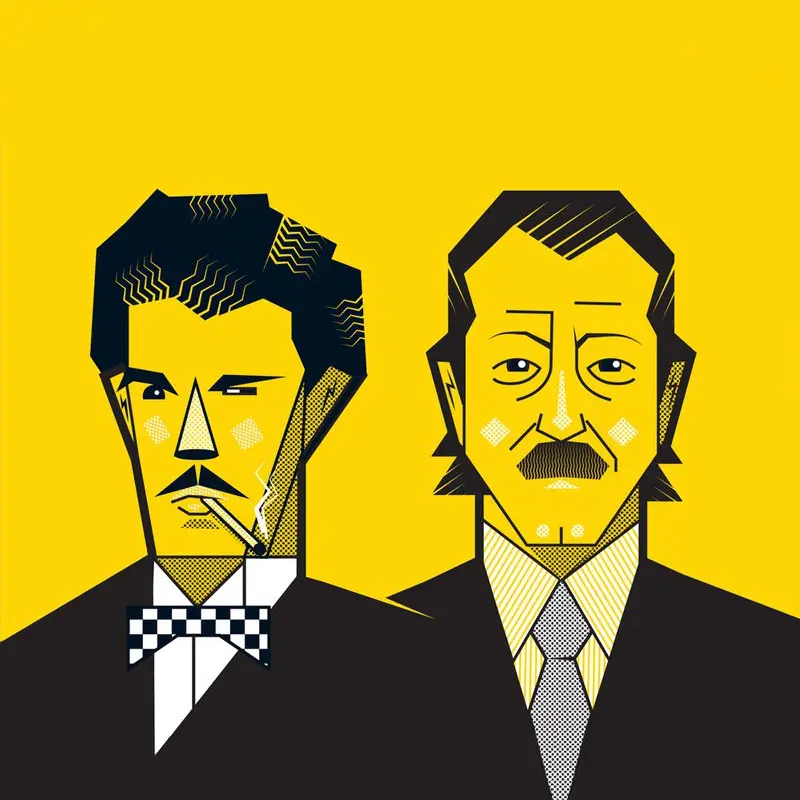

История

История коллектива началась в 1967 году, когда Борис Бланк стал записывать свои первые музыкальные опусы на магнитофон. Из-за отсутствия музыкальных инструментов он начал использовать кухонную утварь: деревянные подставки, хрустальные бокалы, ключи и ножи. Свои нестандартные находки он долгое время пытался опробовать в различных музыкальных группах, но без особого успеха. Читать дальше...
Участники
Борис Бланк
Дитер Майер
Карлос Перон (Не является участником с 1983 года)
Дискография
Альбомы
Solid Pleasure (1980)
Claro Que Si (1981)
You Gotta Say Yes to Another Excess (1983)
Stella (1985)
One Second (1987)
Flag (1988)
Baby (1991)
Zebra (1994)
The Eye (2003)
Toy (2016)
Point (2020)
Подробнее...